Role - UX Research + Design
Responsibilities
- Designed information architecture updates by analyzing data from on card sort to provide a more intuitive user experience
- Collaborated with team to create personas, scenarios, and user journeys
- Group: Devin Brown, Elizabeth Freda, and Ahmed Kabia
- HCI 454 - DePaul University
- Fall 2021
Overview
About PAWS NY
Pets Are Wonderful Support (PAWS) NY helps low-income, older, and disabled New Yorkers remain with their pets by delivering programs and services through a community of volunteers. Services range from daily dog walking to litter box maintenance, veterinary care, and emergency fostering.
Problem Statement
To overhaul the website’s information architecture to make it more user-friendly and ensure that any site visitor could seamlessly access information about PAWS NY’s critical services.
User Personas
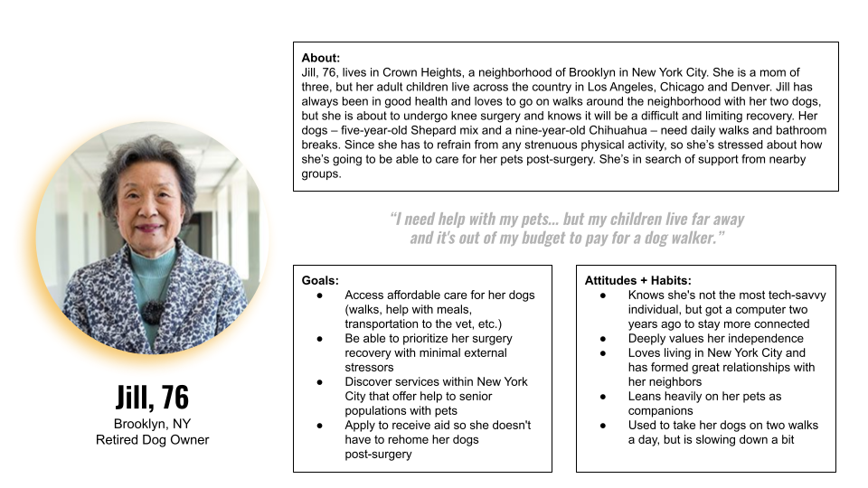 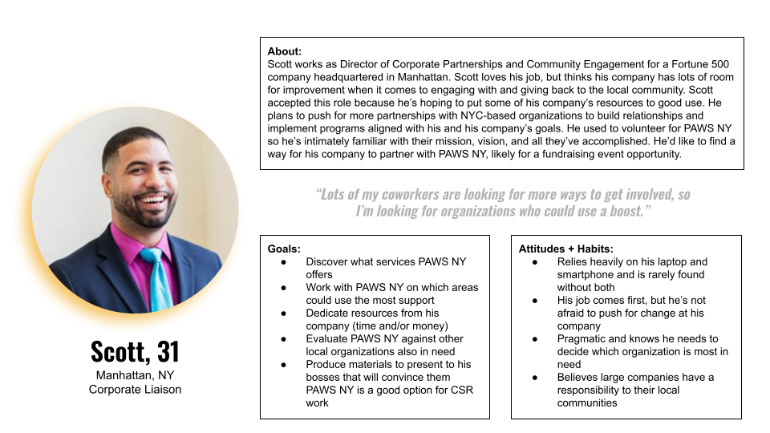 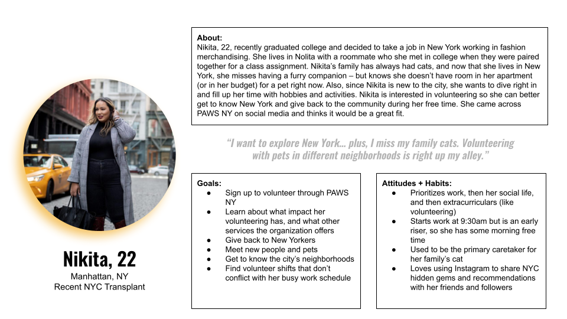Key Tasks
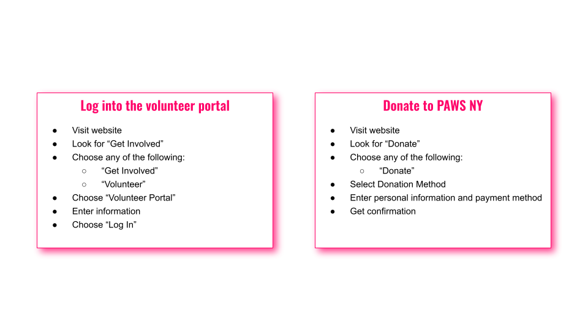User Scenarios
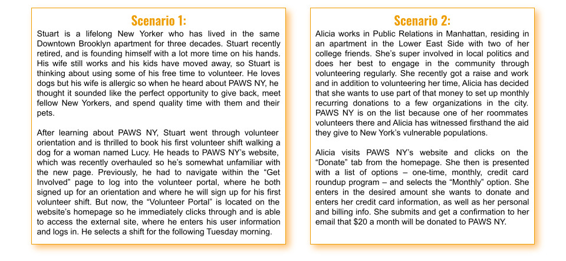
User Testing
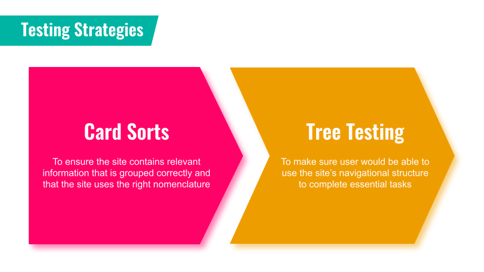
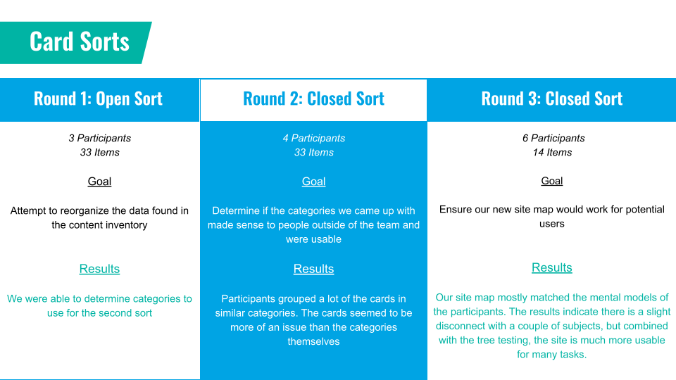
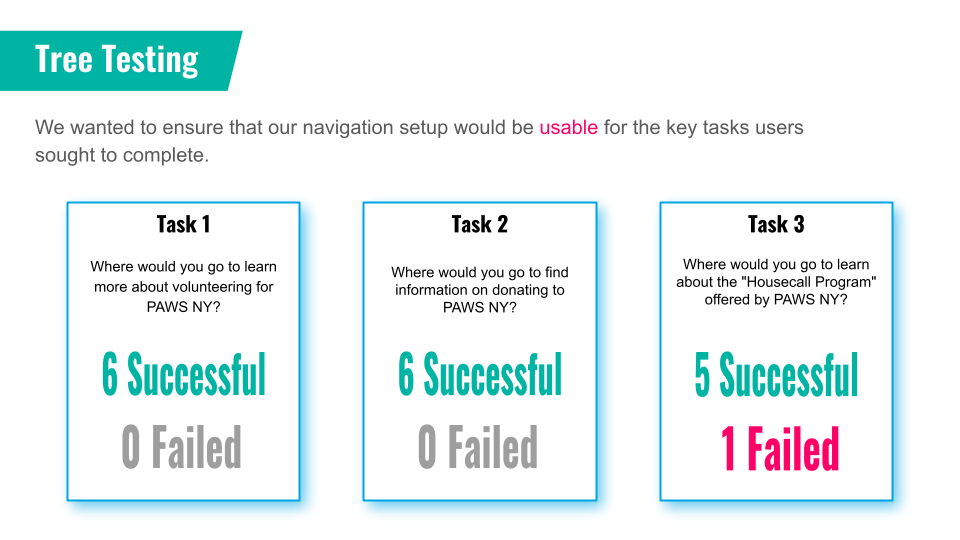

User Journey & Mockups
Task: Log in to Volunteer Portal
Screen 1 - Homepage
User Testing
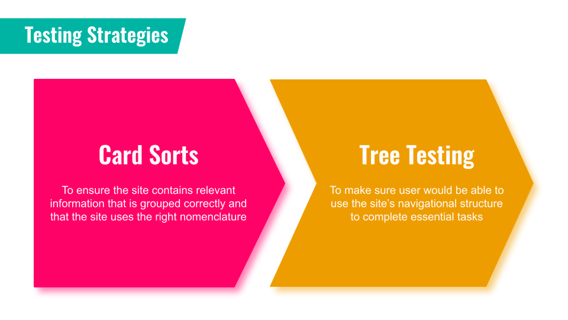
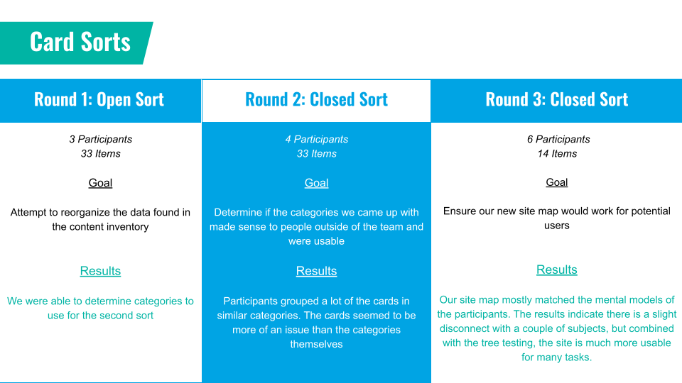
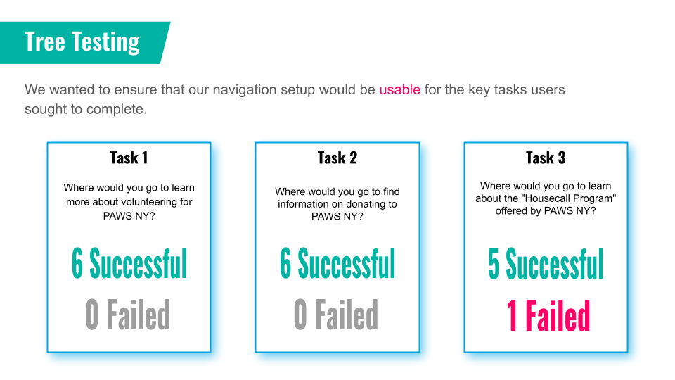
User Journey & Mockups
Task: Log in to Volunteer Portal
Screen 1 - Homepage
User Journey & Mockups
Task: Log in to Volunteer Portal
Screen 1 - Homepage
This page contains links to donate, learn more about PAWS NY, and to the volunteer page. Users can hover over the "Get Involved" navigation button to expose a drop-down menu with page options.
From here, they can click "Volunteer" to access the volunteer page. Users can also scroll down the home page and click "Volunteer" to accomplish this part of the task.


Screen 2 - Volunteer Page
Users can select “Volunteer Portal” to access the login page for the portal.
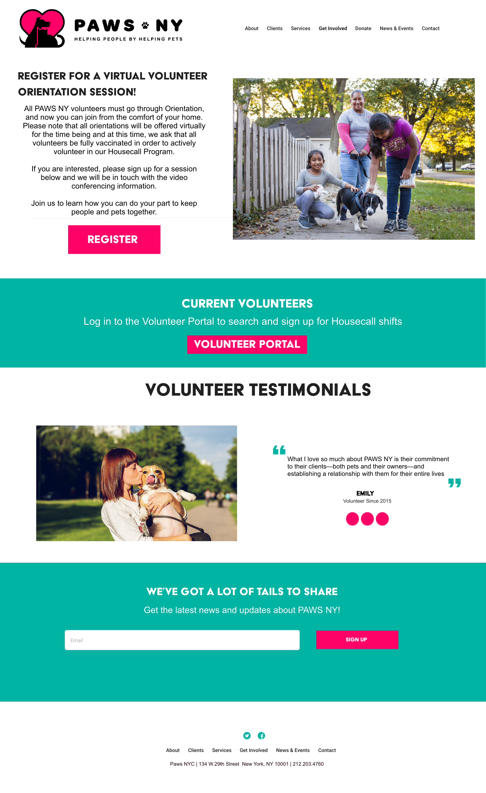Screen 3 - Volunteer Portal Login
Users can enter their login information and select “Sign In." This will bring users to the volunteer portal.
There are options to sign in using Google or social media applications, and users can ask the site to remember their login information for next time.
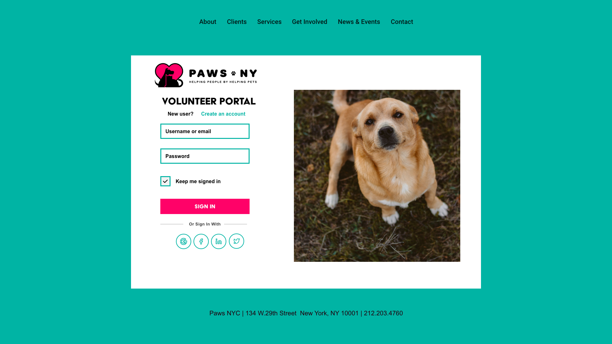Screen 4 - Volunteer Portal
The user, is shown the Volunteer Portal page. The user will see upcoming schedule shifts, sign up for available shifts and interact with other volunteers on the discussion board.
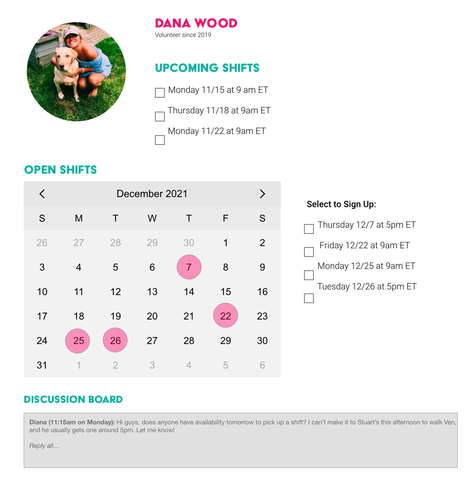
Task: Donate to PAWS NY
Screen 5 - Donate Page
The user is shown the Donate page. The user will select “Make a Donation.” The user will also see additional information on ways to give to PAWS NY.
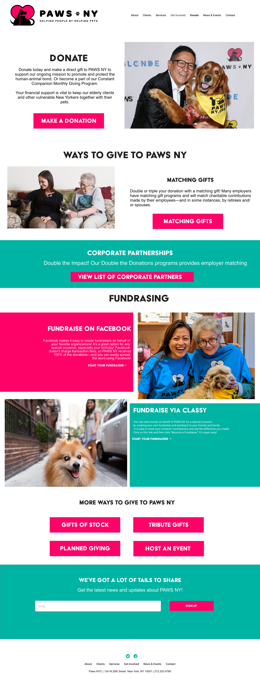Screen 6 - Donation Contribution Page
The user is shown the Donation Contribution page. The user will see will select the payment amount and type of donation (one-time or recurring). The user will enter personal information and select “Give to PAWS NY.”
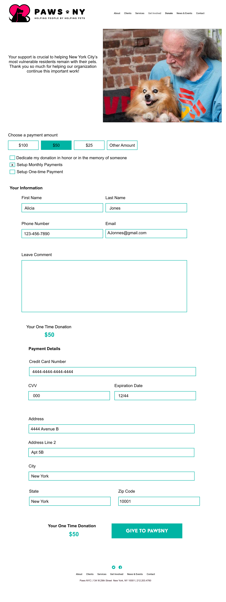Screen 7 - Donation Confirmation Page
The user is shown the Donation Confirmation page. The user will see their donation was submitted successfully.
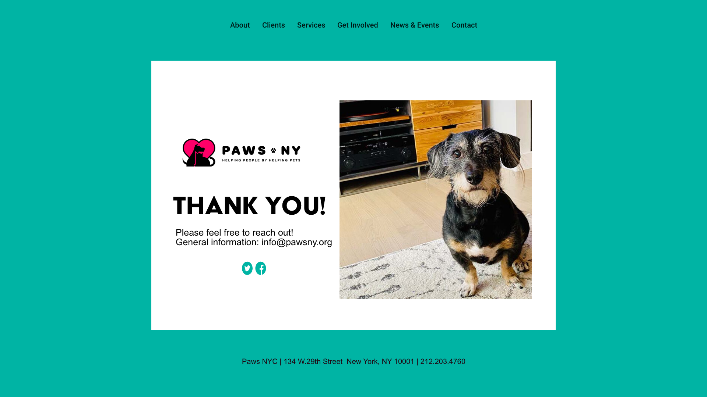Outcomes & Reflections
Our goal for this project was to simplify the navigation of PAWS NY, focusing on two popular user tasks: finding information on 1) volunteering and 2) donating. Overall, the website navigation was crowded, redundant, and confusing. Incidentally, PAWS NY redesigned its website during the process of this project.
We’d recommend the following future steps to continue to refine PAWS NY’s website:
Test more key tasks: For this project, we were only able to perform IA testing with two key user tasks. Additional tasks should be tested in the future (corporate partnerships, read testimonials, purchase merch, etc.)
Refine the site navigation further: While we could significantly reduce the number of unnecessary tabs on the PAWS NY homepage, there may still be the opportunity to streamline their homepage further.